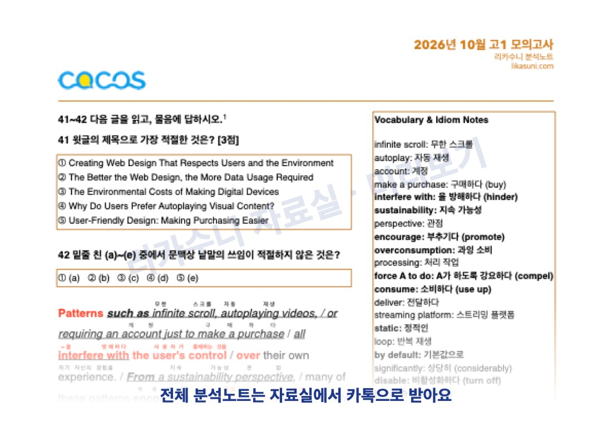

2026 고1 10모 영어 41~42번 장문 해설·분석이에요. (2026 10월 고1 영어 모의고사 · 전국연합학력평가 · 41번 제목 ① · 42번 어휘 ⑤ (e) powerless → powerful)
정답 근거, 오답 거르는 법, 구문(not whether A but whether B · whether 명사절·부사절 · make + 목적어 + 보어), 어휘를 정리했고 분석노트 전자책·pdf 보는 곳은 글 아래에 있어요.
안녕하세요, 이매동 코코스학원 리카수니 원장입니다.
학생 요청으로 만든 분석노트를 바탕으로 정리했어요. 시험지를 옆에 펴 놓고 보시면 더 잘 보여요.
· 시험: 2026년 10월 고1 전국연합학력평가 영어
· 번호: 41~42번 (장문 독해)
· 41번 제목 [3점] 정답: ① Creating Web Design That Respects Users and the Environment (사용자와 환경을 존중하는 웹 디자인 만들기)
· 42번 낱말의 쓰임 정답: ⑤ (e) powerless → powerful
무한 스크롤·자동 재생처럼 사용자 통제를 약하게 하고 데이터와 에너지를 낭비하게 하는 웹 디자인을 비판하는 글이에요.
디자이너는 영향이 적은 선택지를 기본값(default)으로 두고, 다른 선택지도 분명히 열어 두어야 한다는 흐름이에요.
· 근거 1: 무한 스크롤·자동 재생·계정 요구 같은 패턴은 사용자 통제를 방해하고 데이터와 주의력의 과잉 소비를 부추겨요.
· 근거 2: 가장 책임 있는 방법은 영향이 적은 선택지를 기본값으로 만들고 대안도 쓸 수 있게 두는 것이에요.
→ 사용자(선택권)와 환경(에너지) 둘 다 존중하는 디자인, 정답 ①이에요.
· ② 디자인이 좋을수록 데이터가 더 필요하다 → 글은 오히려 데이터를 줄이자는 쪽이에요.
· ③ 디지털 기기를 만드는 환경 비용 → 기기 생산 이야기는 없어요.
· ④ 왜 사용자는 자동 재생을 좋아하나 → 사용자 선호를 다루지 않아요.
· ⑤ 구매를 더 쉽게 → 계정 요구는 문제점의 예로만 나와요.
제목은 '사용자'와 '환경' 두 단어가 함께 들어간 선택지를 찾으세요.
· (a) overconsumption, (b) forces, (c) deep, (d) responsible 은 모두 흐름에 맞아요.
· (e) Defaults are powerless → 기본값이 사용자 행동과 환경 영향을 크게 좌우한다는 글이라 powerful(강력한)이 되어야 해요.
어휘 문제는 '글 전체가 말하는 방향'과 반대되는 단어를 찾으면 돼요.

1) 긴 주어 + all + 동사
→ Patterns such as infinite scroll, autoplaying videos, or requiring an account ~ all interfere with the user's control
2) whether ~ or not (~이든 아니든, 부사절) / keep -ing / force A to do
→ keeps loading new content whether the user wants it or not
3) Take ~ (~를 예로 들어 보자) / replace A with B / unless
4) 가주어 it, not whether A but whether B
→ The ethical line is not whether nudging exists, but whether it is transparent, reversible, and aligned with the user's interests.
5) make + 목적어 + 보어 / when + 과거분사 (when chosen = when they are chosen)
· infinite scroll 무한 스크롤 / autoplay 자동 재생
· interfere with ~을 방해하다
· sustainability 지속 가능성
· encourage 부추기다
· overconsumption 과잉 소비
· force A to do A가 ~하도록 강요하다
· consume 소비하다
· static 정적인 / loop 반복 재생
· by default 기본값으로
· disable 비활성화하다
· bury 숨기다
· opt out 빠져나오다, 거부하다
· acknowledge 인정하다
· nudge 유도하다
· transparent 투명한 / reversible 되돌릴 수 있는
· aligned with ~와 일치하는
· alternative 대안 / available 이용할 수 있는
· agency 주체성
분석노트에 '서술형 대비 한 문장' 3개(The default setting is the quietest but most powerful choice a designer makes. 등)와 whether 명사절·부사절 정리, 영어 핵심 요약(Core Summary)을 해석과 함께 넣어 두었어요.
자료실에서 이 문항 분석노트를 전자책으로 바로 볼 수 있어요. (끊어 읽기·해석·구문·어휘 3쪽)
인쇄용 pdf 는 카카오 로그인 후 카톡으로 받을 수 있고, 같은 회차 다른 번호도 요청할 수 있어요.
▶ 2026 고1 10모 영어 41-42번 해설·전자책
https://data.likasuni.com/moe/go1/2026-10/eng/41-42/
▶ 2026 고1 10모 영어 분석노트·변형문제·단어 pdf
https://data.likasuni.com/moe/go1/2026-10/eng/
영어 문제지·정답표와 듣기, 국어·수학·탐구 시험지와 등급컷도 회차 페이지에 모아 두었어요.
▶ 2026년 10월 고1 모의고사 전과목 문제·정답 pdf
https://data.likasuni.com/moe/go1/2026-10/
분당 이매동 코코스학원은 초등·중등·고등 영어와 수학을 가르쳐요.
모의고사·수능특강·내신 대비가 궁금하시면 편하게 문의해 주세요.
· 홈페이지: https://www.cocosedu.co.kr/
· 주소: 경기 성남시 분당구 판교로 476 2층